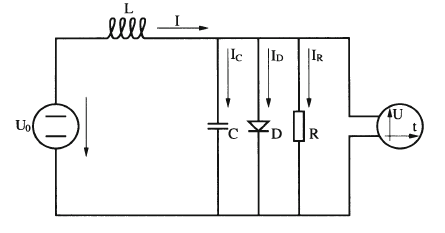
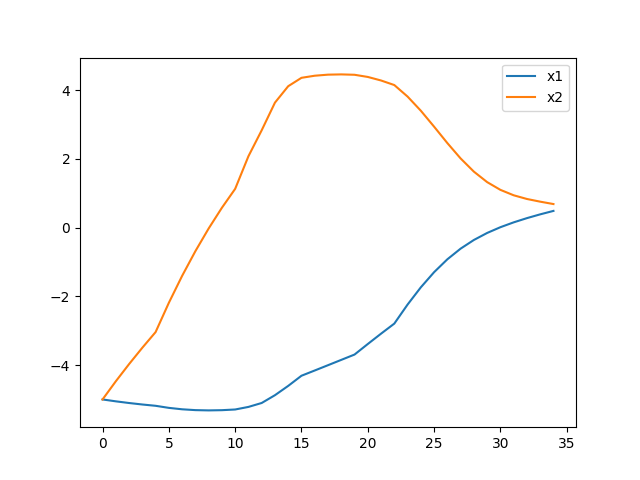
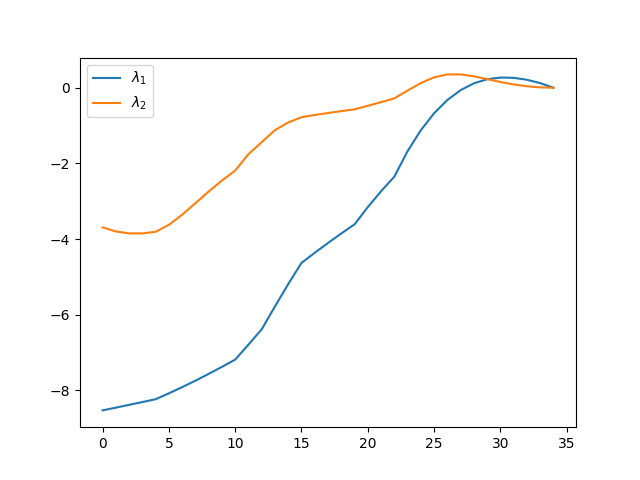
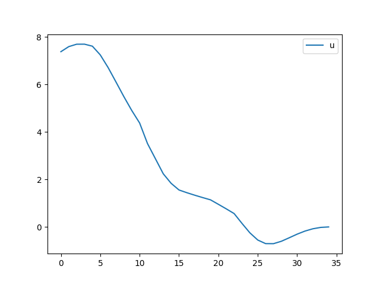

Sayısal Kontrol ve Sınır Değer Problemleri (BVP)
Bu bölümde optimal kontrol problemlerini sayısal çözmenin yöntemlerini göreceğiz.
Rayleigh Problemi
Bir elektrik devresi düşünelim, bu devre düz voltajı salınıma çevirebiliyor,

Devreyi sol taraftan verilen $U_0(t)$ ile kontrol etmek mümkün [1, sf. 189], [2, sf. 413]. Devreninin denklemi
$$ \ddot{x} = -x(t) + \dot{x}(t) ( 2.0 - p \dot{x}(t)^2 ) + u(t) $$
ki biz $p = 0.1$ seçeceğiz, ve konum değişkeni $x(t)$ $t$ anındaki elektrik akımı $I$'yı temsil ediyor. ODE sistemini çıkartmak için $x_1 = x$, $x_2 = \dot{x}$ dersek,
$$ \dot{x_2} = -x_1 + (2.0 - 0.1 x_2^2)x_2 + 4 u(t) $$
Acaba $x_1(t=0)=-5$ ve $x_2(t=0)=-5$ başlangıç şartları için, $t_f=2.5$ anına kadar kontrolü ve salınımı az seviyede tutmaya çalışsak nasıl bir kontrol uygulamamız gerekir?
Yani minimize etmek istedigimiz,
$$ J(u) = \int_{0}^{2.5} V \mathrm{d} t = \int_{0}^{2.5} (x_1^2 + u^2) \mathrm{d} t $$
ki $V = x_1^2 + u^2$.
Not: Üstteki formül tam formül $J(u) = \phi(x(t_f) + \int_{0}^{2.5} V \mathrm{d} t$ formulunden biraz farklı, $\phi$ yok, yani varılan son konum için bir bedel tanımlanmadı. Bunun sonucu $\lambda(t_f)$'in sıfır olmasıdır.
Hamiltonian'ı tanımlarken
$$ \mathcal{H} = V + \lambda^T f $$
formülü verilmişti. $f$ formülü üstte görülen $\dot{x}_1$ ve $\dot{x}_2$'den oluşuyor tabii.
Şimdi $\mathcal{H}$'yi sembolik olarak bulalım,
import sympy
u, x1, x2, lam1, lam2 = sympy.symbols('u x1 x2 lam1 lam2')
x = sympy.Matrix([[x1],[x2]])
lam = sympy.Matrix([[lam1],[lam2]])
f = sympy.Matrix([[x[1]],[ -x[0]+(2.0 - 0.1*x[1]**2)*x[1] + 4*u ]])
V = x[0]**2 + u**2
H = V + lam.T.dot(f)
print (H)
print (sympy.latex(H))
lam1*x2 + lam2*(4*u - x1 + x2*(2.0 - 0.1*x2**2)) + u**2 + x1**2
lam_{1} x_{2} + lam_{2} \left(4 u - x_{1} + x_{2} \left(2.0 - 0.1 x_{2}^{2}\right)\right) + u^{2} + x_{1}^{2}
$$ \mathcal{H} = \lambda_{1} x_{2} + \lambda_{2} \left(4 u - x_{1} + x_{2} \left(2.0 - 0.1 x_{2}^{2}\right)\right) + u^{2} + x_{1}^{2} $$
Eğer bu formülü biraz masajlarsak, [2]'deki sonucu elde ederiz,
$$ = x_1^2 + u^2 + \lambda_1 x_2 - \lambda_2 \left( x_1 - 4u + x_2 \left( \frac{x_2^2}{10} - 2 \right) \right) $$
$\dot{\lambda} = -(\partial \mathcal{H} / \partial x)^T$ ve $\lambda(t_f) = (\partial \phi / \partial x)^T$ üzerinden ,
lam_dot = -sympy.diff(H, x).T
print (lam_dot)
Matrix([[lam2 - 2*x1, -lam1 - lam2*(2.0 - 0.3*x2**2)]])
$$ \left[\begin{array}{c} \dot{\lambda_1} \\ \dot{\lambda_2} \end{array}\right] = \left[\begin{array}{c} \lambda_2 - 2 x_1 \\ \lambda_1 \left( \frac{3 x_2^2}{10} - 2 \right) - \lambda_1 \end{array}\right], \quad \left[\begin{array}{c} \lambda_1(t_f) \\ \lambda_2(t_f) \end{array}\right] = \left[\begin{array}{c} 0 \\ 0 \end{array}\right] $$
Optimal kontrol girdisi için $u(t)$'yi için bir çözüm bulmayı gerektiriyor,
u, x1, x2, lam1, lam2 = sympy.symbols('u x1 x2 lam1 lam2')
HH = lam1*x2 + u**2 + x1**2 - lam2*(x1 - 4*u + x2*(x2**2/10 - 2))
uopt = sympy.solve(HH.diff(u),u)[0]
print ( uopt )
-2*lam2
Yani
$$ u^\ast(t) = -2 \lambda_2(t) $$
sonucuna eriştik. Bulduğumuz optimal $u^\ast$ değerini $f$ denklemindeki $u$'lar yerine koyarsak,
x_dot = f.subs({u: uopt})
print (x_dot)
Matrix([[x2], [-8*lam2 - x1 + x2*(2.0 - 0.1*x2**2)]])
Daha önceden bulduğumuz $\dot{\lambda}$ formülünü hatırlayalım,
print (lam_dot)
Matrix([[lam2 - 2*x1, -lam1 - lam2*(2.0 - 0.3*x2**2)]])
Artık elimizde bir iki noktalı sınır problemi var, bu problemi sayısal olarak çözebiliriz.
$$ \left[\begin{array}{c} \dot{x}_1 \\ \dot{x}_2 \\ \dot{\lambda}_1 \\ \dot{\lambda}_2 \end{array}\right] = \left[\begin{array}{c} x_2 \\ -x_1 + (2 - 0.1 x_2^2 ) x_2 - 8 \lambda_2 \\ \lambda_2 \\ \lambda_1 \left( \frac{3x_2^2}{10} - 2 \right) - \lambda_1 \end{array}\right], \quad \left[\begin{array}{c} x_1(0) \\ x_2(0) \\ \lambda_1(t_f) \\ \lambda_2(t_f) \end{array}\right] = \left[\begin{array}{c} -5 \\ -5 \\ 0 \\ 0 \end{array}\right] $$
from scipy.integrate import solve_bvp
def fun(x, y):
return np.vstack((
y[1],
-8*y[3] - y[0] - y[1]*(y[1]**2/10.0),
y[3]-2*y[0],
y[3]*(3/10*y[1]**2-2) - y[2]
)
)
def bc(ya, yb):
return np.array( [ ya[0]+5, ya[1]+5, yb[2], yb[3] ] )
t = np.linspace(0, 2.5, 10)
y = np.ones((4, t.size))
sol = solve_bvp(fun, bc, t, y)
print (y.shape)
print (sol.y[0].shape)
(4, 10)
(35,)
df = pd.DataFrame()
df['x1'] = sol.y[0]
df['x2'] = sol.y[1]
df.plot()
plt.savefig('phy_num_02.png')

df = pd.DataFrame()
df['$\lambda_1$'] = sol.y[2]
df['$\lambda_2$'] = sol.y[3]
df.plot()
plt.savefig('phy_num_03.png')

df = pd.DataFrame()
df['u'] = -2*sol.y[3]
df.plot()
plt.savefig('phy_num_04.png')

Son grafikte optimal kontrol politikasını görüyoruz.
Kaynaklar
[1] Bittner, Variational calculus, optimal control and applications
[2] Wilson, Advanced Control using MATLAB
Yukarı